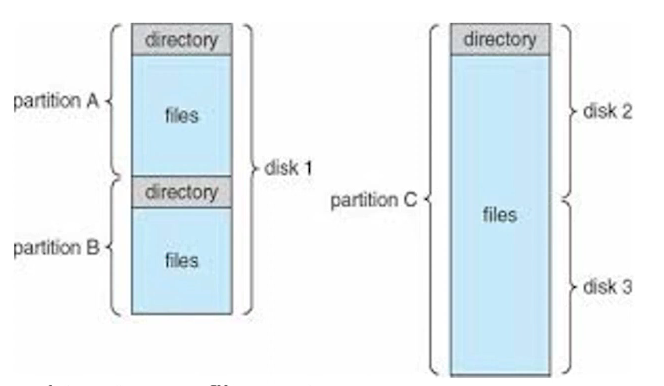

There are two views of a FS: Hardware view (magnetic drive, USB, SSD, etc), and the application view (system calls, protection, attributes, look and feel) in order to provide an abstraction and enable the user to use the hardware.
Hardware View - Magnetic Disks
The most common secondary storage device are hard disks because they are highly dense (lot of data can be stored per unit area), transfer rates are reasonable, inexpensive, and permits rewriting.
There are several platters (circular disks) coated both on the top and bottom side with magnetic material. The charge on the magnetic material determines if 1/0 is stored.
Reading and storing on the hdd is done using the read-write heads which are connected using an arm assembly. The assembly can move the heads towards the centre or away from the centre of the platters. The platters are connected to a spindle and rotate at a very high speed.
Each platter is made of concentric circles and each concentric circle is called a track. Each track is divided into sector and a sector is the smallest unit of a hard disk. Note that sectors in the outer region of the hard disk are bigger than the sectors of the inner region of the hard disk.
A cylinder is a set of tracks which are all accessible from a given rw-head position. In the image on the left, it is the innermost concentric circle on all the platters.
Disk Controllers
To understand how rw of data works we need a higher level perspective.
You have 4 processors which are connected to a frontside bus. And then you have a chipset also known as North Bridge on which you have various peripherals.
The north bridge has a DMI bus which connects to the South Bridge connecting to the Hard Disk Controller (ATA) - Legacy
North Bridge connects to a SATA controller - Modern
The hard disk controllers are memory mapped to the address space of the processor. The controller controls the spindle and the arm (rw-head) to rw the hard disk.
On an embedded device the hard disk controller is connected to the bus.
Typically transfers can be done in 2 ways:
One is data read from the hard disk can be directed to registers in the processor. From the processor it could possibly be written to DRAM.
The second, more common way where you need to load a lot of data from the hard disk into the RAM is where the processor initiates a request to read from the hard disk controller. The Hard disk controller initiates the transfer directly into certain memory locations in the DRAM (Processor not involved in the transfer). Once the transfer is complete the hard disk controller would send an interrupt to the processor to indicate that the transfer is complete. (When a page fault occurs this type of transfer takes place).
§10.2: Reading data from Hard disks
Access Time
Broadly speaking, accessing data aka the Access Time comprises of a few parts
Seek Time: Time taken to move the head assembly to the desired track. It varies depending on the current head location hence average seek time is generally considered.
Rotation Latency: Time taken to rotate the disk so that the required sector is under the head which depends on the spindle.
Constant Linear Velocity (CLV): spindle speed (rpm) varies depending on the position of the head so as to maintain constant r/w speeds. (Used in audio CDs)
Sectors close to the centre are smaller and hence the density is considerably higher compared to the outer region. Thus in CLV speed of spindle varies so that the r/w of inner vs outer sector remains the same.
Constant Angular Velocity (CAV): spindle velocity is always a constant which is easy to engineer and is more durable. (Used in hard disks). CAV allows for higher r/w rates because there are no momentum issues.
Data Rate: Time to get data off the disk.
Disk Addressing
Cylinder, Head, Sector (CHS) tuple: Well suited for disks but not for any other medium and it needs abstraction. (Older Scheme)
Logical Block Addressing (LBA): Large 1-D array of logical blocks where a logical block is the smallest unit of transfer addressed using 48 bits.
Mapping from CHS to LBA where HPC: heads/cylinder, SPT: sectors / track
LBA=(C∗HPC + H)∗SPT+(S−1)
Within the hard disk controller, the LBA addressing is converted to a head and a sector. Then there is seek and rotation to read from those sectors.
§10.3: Disk Scheduling
Since the read times could be considerably slow due to the mechanical movements, we would like to minimise the seek time and rotational latency. One way to reduce seek time is by minimising head movements.
Note that the head positions depend exclusively on the cylinder. If we were to use FCFS scheduling for the following cylinder queue: 95,180,34,119,11,123,62,64 - we would have wild oscillations and a lot of head movements. If the current cylinder is 50:
∣95−50∣+∣180−95∣+...=644
The Shortest Seek Time First (SSTF) is the counterpart of Shortest Job First. Similar to SJB, it could lead to starvation of cylinders that are queued but very far from the current one.
There are elevator based algorithms:
SCAN: Start scanning toward the nearest end and goes till 0, then it starts processing sectors on the way to the other end.
A limitation of this algorithm is when sector requests are uniform. Suppose you’re in cylinder 199 and requests start coming in with t1 arriving first and t4 arriving last. Since t1 is at the other end, it will be serviced last even though it arrived first.
C-SCAN: Start scanning toward the nearest end and go till the 0. Then go to the last cylinder say 199 and then start processing sectors again. This is useful if tracks are accessed with uniform distribution. Note that shifting one extreme not included in the head movement count.
Compared to SCAN, C-SCAN only moves in one direction and resets. Thus if requests arrive uniformly, then this algo would service t1 before t2.
C-LOOK: Like C-SCAN, but don’t go to the extreme. Stop at the minimum (or maximum).
§10.4: Application View of Filesystem
From a users perspective, files are a byte array and are persistent across reboots and power failures. From an OS perspective, files are stored on secondary (non-volatile) storage devices like HDDs, USB, etc and OS map bytes as a collection of blocks on storage device.
A Files Metadata (inodes):
Name: only info kept in human readable form
Identifier (inode number): A unique number that identifies a file within filesystem.
Type: File type (inode base file, pipe, etc)
Location: Pointer to location of the file on device
Size, Protection (Owner, rwx), Monitoring (creation time, last modified, etc).
Every memory location has an address that can be directly accessed. In files everything is relative.
A characteristic of DRAM is random access because every byte stored in memory has a corresponding unique address.
A location of a file depends on the directory it is stored in. A pointer must be used to store the current r/w position within the file.
To read a byte in a specific file, first search for the file in the directory path and resolve the identifier (expensive for each access). Then use the read pointer to seek the byte position.
Solution: Use open system call to open the file before any access and close system call to close the file after accesses are complete.
Opening a File
The steps involved in opening a file: Resolve the name wrt root directory and check for permissions → Read file metadata into open file table → Return index in the open file table
Systemwide Open File Table: Contains information about inode, size, access dates, permissions, location, etc and reference counts ie number of processes that have opened the file
Per Process Open File Table: Part of the PCBs proc structure which is a pointer to entry in the systemwide table.
Application passes file name through open system call.
sys_open (kernel mode) searches the system-wide open table to see if file already in use by another process.
If yes, then increment usage count and add pointer in per-process open file table.
If no, search directory structure for file name and add to system-wide open file table and per-process open file table.
The pointer (or index) in the per-process open file table is returned to application which becomes the file descriptor.
Closing a File
Per process open table entry is removed and system wide open table reference count decremented by 1. If value becomes 0 → updates copied back to disk, remove entry from system wide open table
From our program in the userspace, we provide the file descriptor (index). This system call invokes the kernel to execute which checks the per-process open-file table which leads to the system-wide open-file table and finally the data blocks.
§10.5: File system organization
From an OS perspective, files are organised as a file system and a Volume is used to store a file system. A volume could be present in partitions, disks, or across disks. It contains directories which record information about name, location, size, and type of all files on that volume. 
Protection: Each file has a type of access (rwx), access control (which user), and classification of users, groups associated with it.
Directories (stored on disk)maps file names to location on disk.
Single-level directory: One directory for all files is simple but there are issues when multiple users are present and all files should then have a unique name. (legacy)
Two-level directory: One directory for each user which solves name collision issues between users. However they are still not flexible enough as it is difficult to share files between users. (legacy)
Tree structured directory: Directory stored as files on disk. Bit in file system used to identify directory and they are referenced by slashes between directory name. Special system calls to rw and create directories. (modern)
Directories can also share files by creating links between files in Acyclic Graph Directories. A hard link is a link to the actual file on disk whereas a soft link is a symbolic link to the path where other file is stored.
Hard links cannot link directories and they cannot cross filesystem boundaries. A soft link can do both.
Hard links always refer to the source, even if moved, removed or renamed whereas soft links are destroyed if moved, removed, or renamed.
Hard links also store reference count in file metadata.
The inode number for hard links are the same whereas they are different for softlinks.
The OS has a series of steps to link to application view to the hardware view. From the application view the only way to access files is through system calls.
Logical FS: Receives system calls (sys_open, sys_read, sys_write)
File Organisation Module: Translates the 1D array to that of the physical view. Convert the logical address to track, sector, cylinder. If there is a different storage device, this layer gets modified. Logical FS remains intact.
From an application perspective things are fixed and independent of which secondary storage device is used. However as you go down, you dig deeper. For example at File Org module you can distinguish between which type of storage device you have. At the I/O control you’d be able to distinguish between different types of a storage device for example if a CD-ROM is R or RW.
Disk Contents
Boot Control Block (per volume): If no OS, then boot control block is empty
Volume Control Block (per volume): Volume (or partition details) such as number of blocks in the partition, size of blocks, free blocks etc. It is also called Superblock.
Directory Structure: To organise the files
Per file file-control-block: Metadata about a file, unique id to associate with a dir
In-Memory Contents
Besides whats present in the disk, the FS also has a component thats present as part of the OS. These are stored in the memory and directly controlled by the OS.
Mount Table: contains information about each mounted volume
Directory structure cache: In memory and holds recently accessed dirs
System-wide and Per-Process open file tables
Buffer Cache: holds FS blocks
Tracking Free Space
In order to utilise the HDD in the best way, we need to determine which are used and which are free. This is important in order efficiently utilise resource, it also affects the time taken to rw files, and also affects incase FS crashes to determine if a file can be retrieved. You can keep track using the following ways:
Bitmap of blocks are used where 1 indicates if a particular block is used.
Linked list of free nodes
FS may use heuristics eg group of closely spaced free blocks
How does the OS allocate blocks in the disk?
Contiguous Allocation
Each file is allocated contiguous blocks on the disk and a directory entry keeps the start and length.
First fit: First X free blocks that are contiguous
Best Fit: scan all blocks and find the ideal location where the file would exactly fit in such that it leaves very less space vacant
Advantages: Easy / Simple
Disadvantages: External fragmentation (may need regular defragmentation) & users need specify the max file size at creation (may lead to internal fragmentation as a file may request much larger space and not use it).
Linked Allocation
Directory stores link of start and end block (optionally) and a pointer in block stored to link to next block.
Not suited for direct access of files as all pointers need to be accessed.
Overheads: Pointer needs to be stored.
Reliability: If a pointer is damaged, rest of the file is lost. A bug in the OS may result in a wrong pointer being picked up.
Overheads may be reduced using clusters ie cluster of sequential blocks only have one pointer.
FAT File
It is a variation of the linked allocation scheme in which a FAT is a table that contains one entry for each block and is indexed by block number. Files are represented by linking pointers in the FAT table (generally cached).
Moo file starts at block 5. The FAT table for block 5 has 12 which in turn points to End of file (EOF). Thus moo: 5 → 12 → EOF.
Advantages: Solves direct access problems of linked allocation, has greater reliability and you can grow file sizes.
Disadvantages: Volume size is determined by the FAT size.
Indexed Allocation
It uses disk blocks as index blocks that don’t hold file data but hold pointers to the disk blocks that hold file data ie a directory has a filename and a pointer to an index block.
The index table for the file jeep is in block 19. In the table we can see that the first block is in block 9, second in 16, so on. Rather than a separate file allocation table, each file has its own table.
Advantages: Supports direct access, no external fragmentation, easy to grow files.
Disadvantages: Sequential access may be slow ⇒ use clusters
How large should the index block be ?
Files typically are one or two block longs. The index block will therefore only have one or two entries. If you have a large index block → huge wastage
On the other hand a small index block will limit the size of the file → need additional mechanism to deal with large files.
{kind=link}
{kind=link}
{kind=link}
{kind=link}
{kind=link}
{kind=link}
{kind=link}
{kind=link}
{kind=link}
{kind=link}
{kind=link}
{kind=link}
{kind=link}
{kind=link}
{kind=link}